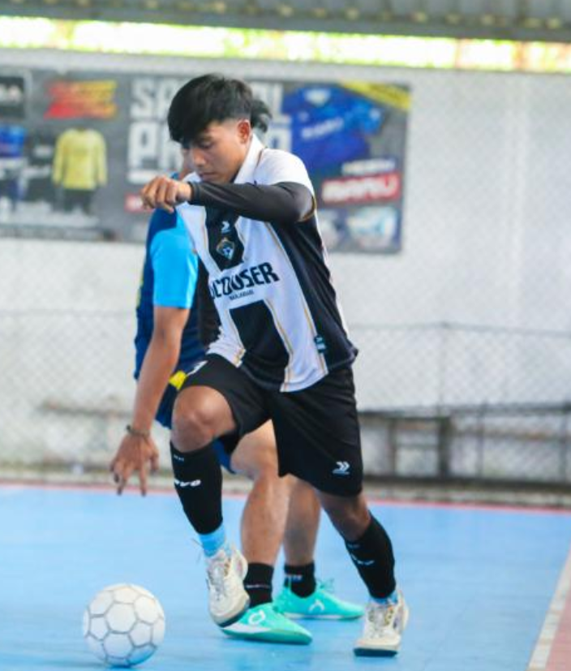

Tentang Kami
Karang Taruna Banjarsari adalah organisasi kepemudaan yang menjadi wadah bagi para generasi muda untuk berkembang, berkreasi, dan berkontribusi secara positif bagi lingkungan dan masyarakat Desa Banjarsari.
Visi
Menjadi organisasi pemuda yang mandiri, kreatif, inovatif, dan menjadi pilar utama dalam pembangunan kesejahteraan sosial di Desa Banjarsari.
Misi
- Mengembangkan potensi dan kreativitas pemuda di berbagai bidang.
- Menyelenggarakan kegiatan sosial, keagamaan, dan olahraga.
- Membangun kemitraan strategis dengan berbagai pihak.
- Menjaga kelestarian lingkungan dan kearifan lokal.
Struktur Organisasi

Andri Apri
Ketua Karang Taruna
Yuni
Wakil Ketua
Ahmad Riyadi
Sekretaris
Dewi Lestari
Bendahara